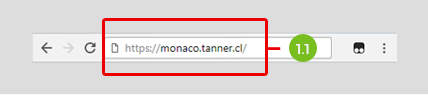
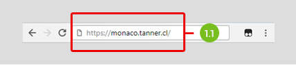
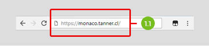
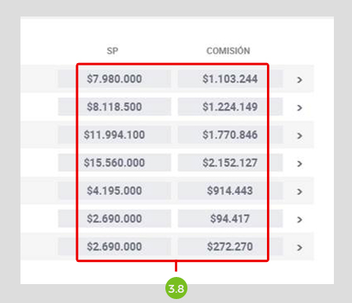

1. Ingreso Mónaco
1.1 Escribe el siguiente enlace en tu navegador: https://monaco.tanner.cl/

 

1.2 Ingresar tu email y contraseña.


2. Actividad
2.1 En ACTIVIDAD podrás visualizar la cantidad de Solicitudes de Créditos ingresados por Tanner. Adicional podrás emitir informes filtrados según tu necesidad.
2.2 Cantidad de solicitudes ingresadas en el rango de fechas seleccionado
2.3 Rango de fechas para desplegar información
2.4 Selección de sucursales
2.5 Selección de ejecutivos Tanner
La lectura que tiene cada gráfico de esta sección es:
2.6 Créditos Aprobados: Visualizarás en % y N° de aprobación (aprobados/solicitudes).
También el total de comisiones y saldos precio de créditos aprobados.
2.7 Créditos Cursados: % y N° de créditos cursados/aprobados. A lo igual que el gráfico anterior visualizarás el total de comisiones y saldos precio, pero de créditos cursados.
2.8 Saldo precio Pagados: Total de saldos precios pagados
2.9 Comisiones Pagadas: Total de comisiones pagadas
3. Detalle de solicitudes
En la sección DETALLE SOLICITUDES, visualizarás cada una de las solicitudes de crédito, donde podrás buscar créditos por RUT de cliente, utilizar filtros de periodos de fechas, filtrar por sucursales o por ejecutivos Tanner:
3.1 Buscar Crédito (RUT): Búsqueda de crédito por RUT de cliente.
3.2 Descargar: podrás descargar los informes en formatos XLS o CSV.
3.3 Rango de fechas para desplegar información.
3.4 Selección de sucursales

3.5 Selección de ejecutivos Tanner
3.6 Contador de Solicitudes aprobadas y rechazadas:
En la tabla de detalles, podrás ver el estado de cada solicitud (Curse, set de firmas o FEI/transferencia pendiente) y en la columna comisión tendrás el monto de saldo precio y comisión del negocio, tanto el estado como los montos se pondrán de color verde si ya fue transferido.
3.7 Curse, set de firmas o FEI/transferencia pendiente.
3.8 Monto de saldo precio y comisión del negocio. Se pone verde si ya fue transferido.

¡Te invitamos a ingresar y disfrutar de este portal diseñado para ti!